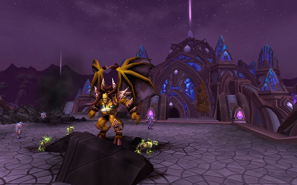

Gran libertad de rol
El límite lo pone tu imaginación


Nos presentamos
¿Quienes somos?
World of Roleplay nace a finales de la primavera de 2016, fruto de las inquietudes de un grupo de amantes del rol, en especial ambientado en World of Warcfrat. Asi que estamos todavia en fase beta del servidor.
Por aquel entonces encontrábamos que hacia falta un servidor de rol en español con la expansion WoD.
Asi que nos liamos la manta a la cabeza y, con ilusion y algún que otro skill técnico, montamos lo que ahora os ofrecemos como plataforma de rol.
WORP está basado en el motor de juegos de código abierto Trinity Core, asi que lo que vereis en nuestro servidor es fruto de nuestra creatividad, intentamos escapar de la copia aunque, por supuesto, cada uno tenemos nuestras referencias.
Pero lo mejor de todo es que queremos que WORP sea un servidor que se rija en primera instancia por los players y para los players, pretendemos que todo aquel que entre a formar parte de la comunidad se sienta tambien, en cierta medida, parte del staff.
Rol al máximo nivel
NUESTRO STAFF
Lady Sylvannas Brisaveloz
|
Administradora economica y social.
Para estar muerta tiene un cuerpazo.
|
Reina Tiffin Ellerian Wryn
 |
Administradora técnica y social.
Dicen que las piedras del camino enseñan el destino.
|